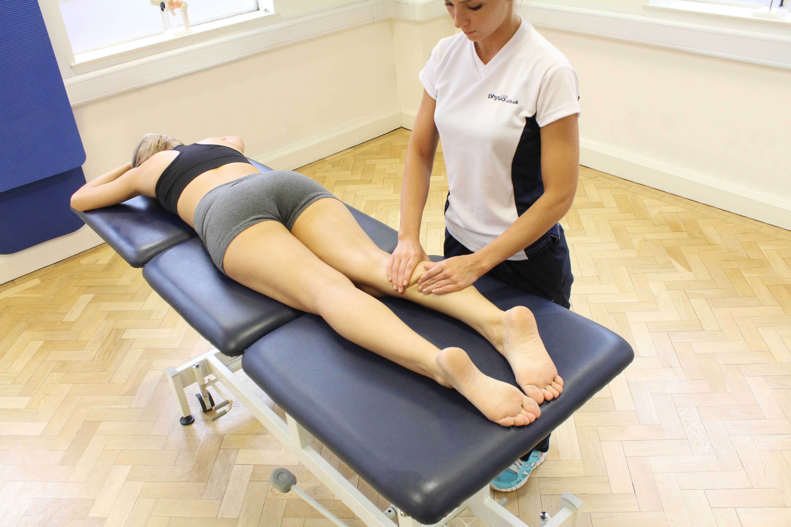
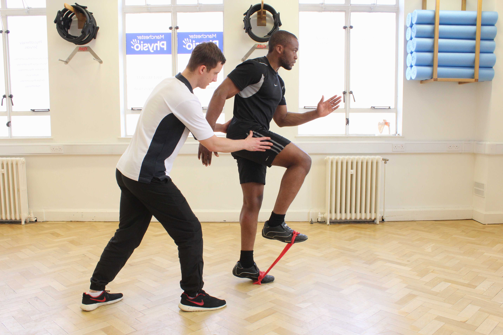

Browse...
Hide All | Show All
- Home
- About Us
- Our Clinics
- What We Treat
- Musculoskeletal
- Conditions
- Head
- Neck
- Shoulder
- Upper Arm
- Elbow
- Forearm
- Wrist
- Hand
- Upper Back
- Lower Back
- Buttock
- Chest
- Abdominals
- Pelvis
- Hip/li>
- Groin
- Upper Leg
- Knee
- Lower Leg
- Anterior Compartment
Syndrome - Bone Bruising of the Tibia
- Calf Strain
- Deep Posterior
Compartment Syndrome - Fractured Tibia & Fibula
- Referred Pain
- Sciatica
- Shin Splints
- Stress Fracture of the Fibula
- Stress Fracture of the Tibia
- Ankle
- Foot
- Symptoms
- Sports Injuries
- Surgery
- Neurological
- Paediatric
- Chronic Pain / Fatigue
- Amputees
- Rheumatology
- Learning Difficulties
- Women's Health
- Respiratory
- Cardiovascular
- Elderly
- Oncology
- Mental Health
- Men's Health
- Vestibular
- Treatments
- Our Services
- Who We Work With
- Appointments
- Courses
- Blog
- Contact Us
Bone Bruising Of The Tibia
What is bone bruising of the tibia?
The thin surface layer of a bone is called the periosteum. A direct trauma to the shin bone can damage the periosteum (known as bone bruising of the tibia or periosteal contusion). This causes a collection of blood underneath the periosteum of the shin bone. Physiotherapy is an important treatment for bone bruising of the tibia.
How does bone bruising of the tibia happen?
Bone bruising of the tibia is caused by a direct blow to the shin with a hard object such as a boot, stick or ball. The impact causes the periosteum to be damaged. The periosteum contains nerve fibres and blood vessels. Damage to the blood vessels in the periosteum causes a collection of blood underneath it. When this blood clots it forms a haematoma and an inflammatory response starts in order to remove it and heal the area.
What are the symptoms of bone bruising of the tibia?
Bone bruising of the tibia causes pain and swelling. Extreme pain is felt at the time of injury as the nerve fibres within the periosteum are stimulated. Pain generally settles within a number of minutes. The pain may return, however, as bleeding occurs under the periosteum. A large painful lump (or lumps) may be seen on the front of the shin. Other symptoms may include:
- reduced range of movement
- deformity
- balance problems
- gait problems
What should I do if I have bone bruising of the tibia?
If you have a bone bruising of your tibia you should commence the RICE regime immediately to control the bleeding and swelling. You should also arrange a physiotherapy assessment as soon as possible. You should continue the RICE regime for the first 48 hours or until the consultation with your physiotherapist.
What shouldn’t I do if I have bone bruising of the tibia?
In the first few days following a direct blow to your tibia, you shouldn’t undertake activities which increase blood flow to the injured area. These activities include hot showers, heat rubs, massage, the consumption of alcohol and excessive activity. These can prolong bleeding underneath the periosteum, causing further pain and an extended recovery.
Could there be any long-term effects from bone bruising of the tibia?
The majority of tibial bone bruising injuries heal without complication within a few weeks with rest and protection from reinjury. The pain usually settles and the prominent bump on the shin gradually disappears.
Physiotherapy treatment for bone bruising of the tibia.
Physiotherapy treatment and advice is important following bone bruising of the tibia. Initially, your physiotherapist will provide you with a diagnosis, determine the exact tissue/s damaged and the extent of this damage. Following the assessment, a determination of how long the injury is expected to take to heal can be provided. Your physiotherapist can also use a number of treatment techniques to reduce your pain and swelling and accelerate the healing of the injured structures.
Treatment may include:
- Hydrotherapy
- Massage
- Range of movement exercises
- Taping
- Back To Top
Book an Appointment
Click to book an appointment online or over the phone
We are open...
Our clinics are open:
Mon - Fri: 8am - 8pm
Saturday: 9am - 5pm
Sunday: 9am - 4pm
Find your nearest clinic...
Physio.co.uk have clinics located throughout the North West.